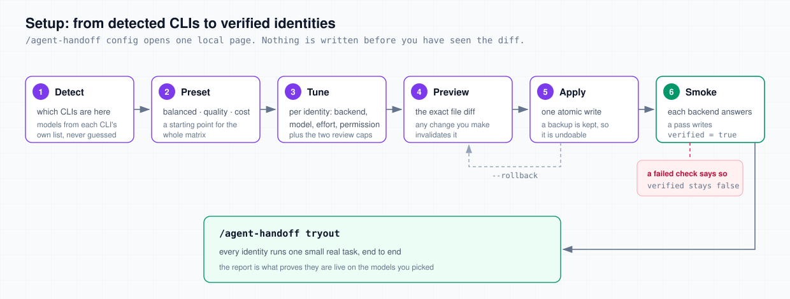
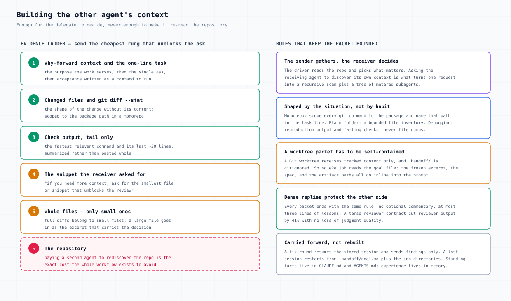
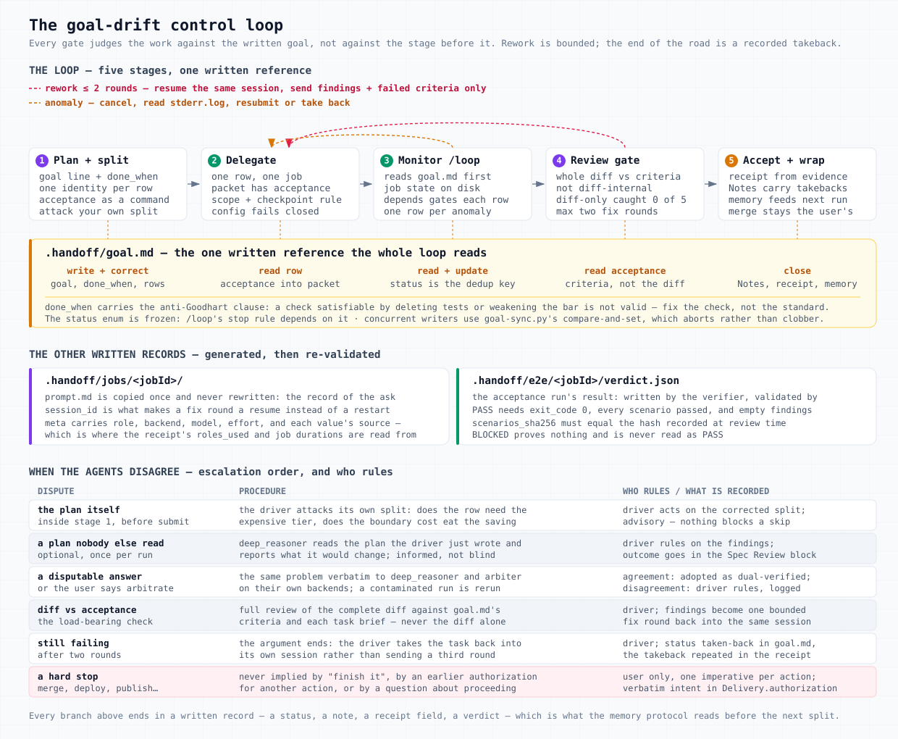
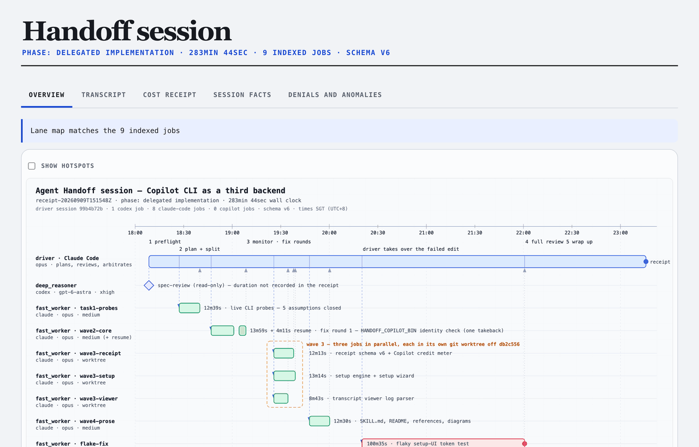

Agent Handoff — user guide
Handoff splits coding work between a driving Claude Code session and a worker CLI. The driver plans, splits, and signs off; the worker executes each task as a background job on its own meter. What you save is the driver’s quota and its context window. What you keep is a review of the whole diff against criteria written before the work started.
How a run works
One flow, one driver. Claude Code refines your request into a plan, attacks its own split before acting on it, hands each delegable row to a worker CLI as a background job, watches those jobs by reading files rather than by holding their history in context, and reads every returned diff against the plan before accepting it. The run ends with a receipt whose numbers were measured rather than remembered.
![Agent Handoff as five phase columns over three lanes. In plan and split, Claude Code writes goal.md, attacks its own split at the adversarial gate, and sends the plan to deep_reasoner for a read-only spec review before it reaches you. In delegate, a packet and a role become one background job per row on codex, claude or copilot, and bad routing is refused before any job exists. Monitor reads each job's state off disk and handles anomalies. Full review checks the whole diff against goal.md and sends a failing one back as a resume fix round. The spec review and the fix rounds both go to the arbiter at their cap. Wrap up writes the receipt, and a strip below lists what every packet carries.](diagrams/handoff-lifecycle.svg)
Three things in that picture matter more than the rest.
- Which CLI runs a job is a configuration answer, never a decision made while delegating. Each task row names an identity; the identity’s configured backend picks the CLI and therefore the meter.
- Everything a job does lands on disk under
.handoff/. That is what lets a monitor tick, a session resumed after a crash, or you tomorrow pick the run up without reconstructing anything. - The driver reads the diff. Delegation is only worth something if the work that comes back is checked, so the review gate reads the whole diff against the written acceptance criteria and never accepts a worker’s summary in place of it.
The commands you will use
| Command | What it does |
|---|---|
/agent-handoff config | Opens the local setup page: which CLI, model, effort and permission each identity gets, plus the two review caps |
/agent-handoff tryout | Runs one small real task per identity and reports which ones are live |
agent handoff (or “hand this to codex”) | Starts a run: plan, split, delegate, monitor, review, receipt |
/agent-handoff resume | Picks up an interrupted run from .handoff/, showing rejected rows first |
/agent-handoff transcript | Renders one job’s event log as a readable page |
/agent-handoff cost-receipt | Reports what each meter recorded for a finished run |
/agent-handoff visualise | Opens the whole run on one local page: timeline, transcripts, cost, facts, denials |
1 · Agent identities and setup
An identity is a capability tier with a concrete home: a backend, a model, an effort level, and a permission posture. It is not a task assignment and not a person. When the driver splits work, it asks one question per row: which capability does this need. The identity’s configuration answers the rest.
![Five identity cards on the left: deep_reasoner, fast_worker and arbiter as core, e2e_specifier and e2e_verifier as an optional pair, plus identity dash for what the driver keeps. They feed a resolution stack — session override, project config, global config, built-in defaults — which produces a backend, model, effort and permission mode, which in turn selects codex exec, claude --print or copilot -p, each with its own meter. Two red notes: no config is a hard error, and a per-job backend that contradicts the role is refused.](diagrams/identities.svg)
deep_reasoner
Ambiguous work where a wrong premise in step one is expensive to find later: architecture, hard diagnosis, config changes that fail quietly. It also reads every plan before you see it.
fast_worker
Mechanical work that the acceptance criteria alone can verify: refactors, test writing, batch migrations, doc generation, wide read-only scans. Most delegated rows are these.
arbiter
The independent second solver for a contested call, and the judge when a review gate runs out of rounds. It never gets routine rows.
e2e_specifier opt-in
Turns a frozen spec into Gherkin scenarios with stable IDs plus tests in the repo’s own stack. Depends on the spec, so it runs beside the implementation.
e2e_verifier opt-in
Runs those reviewed tests against a pinned commit and returns a verdict that is validated before anyone acts on it.
The driver itself not an identity
What the driver keeps: the split decision, cross-task integration, security- and correctness-critical paths, final acceptance. These rows run inline and are marked - in the goal file’s identity column.
The three core identities are always configured. The e2e pair is written only when setup runs with --with-e2e, and a config carrying just the core three is complete rather than half-finished. All five can be mixed across the three vendors, and their values live in .handoff/config.toml (project) or ~/.config/handoff/config.toml (global) and nowhere else.
How a row becomes a job on a meter
Values resolve per field, highest first: a session override, then the project file, then the global file, then built-in defaults. Whatever each field resolves to is recorded in the job’s meta together with where it came from, so a later question about why a job ran on a given model has a written answer.
Four refusals keep that honest, and each of them happens before a job directory exists:
- No Handoff config at all is an error pointing at
/agent-handoff config, never a default model. - A per-job
--backendthat contradicts a named identity is refused, with the config command that would make it legitimate. - An effort value the chosen CLI does not accept is refused. The enums are per vendor:
ultrais Codex-only,noneis Copilot-only, Claude takeslowthroughmax. model = "auto"on Copilot is refused, because the receipt would then record what the vendor picked rather than what you configured.
Moving work to another vendor is a config change you can see. Swapping a row onto a different identity to get a cheaper meter is not allowed, and the flow says so rather than leaving it to judgment. If the configured identity is wrong for the work, the driver says so and asks.
Permission posture
Each identity picks default or allow-all. Default means Claude’s dontAsk with a worker tool set, Codex inheriting your own config with no sandbox flags, and Copilot keeping its path and URL checks. Allow-all means each provider’s own unrestricted mode, not one posture forced onto three CLIs. Read-only wins over both and is inherited by fix rounds.
Two limits are worth saying plainly. This is the permission-rule layer only: no OS-level sandbox is added for a Claude worker running under default. And a denied tool call does not change a job’s exit code, so a worker can finish “successfully” having skipped checks it was refused — which is why the review gate reads the denial count first and re-runs blocked commands itself. Details in the config schema.
Setting it up

verified means a CLI actually answered rather than that a file was written./agent-handoff config opens a page bound to 127.0.0.1. Model lists come from each CLI itself — Codex from its own model/list, Claude from claude --help. Copilot publishes no catalog, so you type the model name and the CLI validates the model-and-effort pair when you apply. Nothing is guessed, and nothing is quietly downgraded. A pair the CLI rejects is reported in its own words.
The page also carries the two review caps, because they belong to the same configuration and not to a prompt:
[hosts.claude_code.identities.fast_worker]
backend = "codex" # claude | codex | copilot
model = "gpt-5.6-sol"
effort = "medium"
permission_mode = "default" # default | allow-all
verified = false
[review]
spec_max_rounds = 1
implementation_max_rounds = 3After a successful apply, run /agent-handoff tryout. Each identity does one small self-contained task, and the report tells you in one glance that they are live on the models you chose. A row that fails says what failed and what to do about it; it never quietly substitutes another model.
2 · The handoff mechanism
This is the body of a run: turning a request into rows, sending rows out as jobs, watching them, and getting a stalled or failed one back on track. Five parts follow, in the order they happen.
2.1 Plan: the goal file comes first
![The request enters and becomes .handoff/goal.md, holding a goal sentence with its done_when, the checkpoint rule and a task table where each row carries an identity — deep_reasoner, fast_worker, the driver itself, and optionally an e2e row. The plan then goes through an adversarial gate asking three questions: is the cheap tier really enough, is the split worth its seams, does it match the stakes. A failing row loops back to be corrected, merged or kept inline. A surviving split goes to the spec review, then to ready-to-delegate with no jobIds yet.](diagrams/plan-split.svg)
.handoff/goal.md is the one written reference the rest of the run judges against. It holds:
| Section | What it carries |
|---|---|
| Goal | One why-forward sentence ending in a done_when condition, with the anti-Goodhart clause attached: a check you can satisfy by deleting tests or lowering the bar is not a valid check, and the fix is the check |
| Checkpoint rule | When the worker should stop and ask you: a destructive action, a real scope change, or something only you can provide |
| Spec review | The status of the plan’s outside read, and one line per round |
| Tasks | One row per task: id · identity · task · acceptance · depends · effort · status · jobId |
| Anomalies · Arbitration · Notes | What went wrong, every ruling, and the handover for anything left open |
Three of those columns pull more weight than they look. acceptance has to be a command or an observable behaviour, because the review gate judges against it. depends is what the monitor reads before submitting a row. And status is the deduplication key across ticks and sessions, so a stale row gets delegated twice.
The driver and the monitor loop both write this file, so writes go through a hash check rather than a lock: a write states the sha256 it last read, and a mismatch aborts and asks for a re-read instead of clobbering the other update. Small work skips the file entirely — ceremony for a five-line fix buys no safety.
2.2 Split: one judgment per row, then attack it
Splitting means answering one question per row: which capability does this work need. There is deliberately no second “owner” or “meter” decision, because each one would be another place to get routing wrong. The two failure directions are named so they can be checked: never route a quality-critical step to a cheaper identity to save money, and never spend the driver’s seat on mechanical work.
Before anything is delegated, the driver attacks its own split in writing. Does each delegated row really not need the expensive tier? Does the integration cost of the split boundary eat the saving? Does each row’s identity match the stakes, with a reason it is not a more expensive one? A row that survives all three gets delegated. Anything else gets its identity corrected, merged into a neighbour, or kept inline.
Acceptance coverage is decided here too. When a change alters user-observable behaviour at a real interface (a UI, an API surface, a mobile screen), the split gains an e2e_specifier row and an e2e_verifier row, with depends wired so the verifier waits on both the tests and the implementation. Internal refactors, docs, config and library work skip them. If the criterion fires and the identities are not configured, the driver says so once, names /agent-handoff config --with-e2e, and carries on without them.
2.3 Delegate: two paths that never cross
![Two parallel paths. The upper one carries the work: a task row becomes a delegation packet the driver writes by hand, saved as prompt.md and kept unchanged as the record of the ask. The lower one carries the routing: --role resolves through config into run.sh flags naming backend, model and effort, with four refusals listed — no config, a backend contradicting the role, an unsupported effort, and model equals auto. Both meet at the job directory, which holds prompt.md, run.sh, meta, log.jsonl, stderr.log, pid, exit_code and session_id, and the configured backend launches it detached. The jobId goes back into the row as status delegated.](diagrams/delegate-paths.svg)
Nothing generates the delegation prompt. The driver composes it in its own context, writes it to a temporary file, and passes the path; the script’s only check is that the file exists. That is authorship discipline rather than validation, and it is deliberate — a packet the script assembled would be a packet nobody had to think about.
What goes into it is bounded by cost. The driver has already read the repository; it pays once to select the evidence so the worker spends its tokens on the work.

Every crossing in the flow has a named shape, and they differ in what they permit rather than in how much they say.
![Claude Code at the centre sending five named packets: a delegation packet to the worker; a goal packet to you with the plan, the open decisions and what a yes authorizes; a spec review packet to deep_reasoner carrying the plan verbatim with no permission to change anything; an arbitration packet to the arbiter with both sides and the evidence; and e2e packets to the acceptance pair with the spec inline, a named test target and a branch of their own. A strip below lists what every packet carries: why the work matters, one clear task, acceptance you can run, where it may not go, and a reply without filler.](diagrams/handoff-packet-anatomy.svg)
Some rows must not share a working tree: the e2e pair, and anything else you want kept apart. Those run in a Git worktree cut from an immutable commit SHA. Four rules make that usable, and each is a bug somebody already hit: the repo argument always names the main repo, never the worktree; the base is resolved to a SHA before the job directory exists, so a moving branch cannot leave a verdict naming a commit nobody tested; the worker commits on its own branch and does nothing else; and the driver reviews, integrates and cleans up. Cleanup refuses a worktree with uncommitted changes rather than discarding work.
One consequence catches people out: a worktree receives tracked content only, and .handoff/ is ignored by Git. So no worktree job reads the goal file. The spec, the frozen goal excerpt and the artifact paths all go inline into the packet.
2.4 Monitor: read the files, not your memory
![One decision — how long will it run — splits into waiting on a short job with status --wait, or arming a five-minute loop. The loop is a cycle of four stations: read goal.md first for the split and the statuses, ask each running job for its status, read its last event from log.jsonl, write the statuses back for the next tick. It exits when no job is left running. Two side notes: depends holds a row until the rows it waits on have finished, and an anomaly branch covering a failed job, two quiet ticks, cancelling, reading the logs, resubmitting or taking it back.](diagrams/monitor-loop.svg)
One decision shapes the phase: how long the job is expected to run. Under about five minutes, block on it and read the printed state line — the exit code alone cannot tell “finished cleanly” from “still going”. Longer or parallel work gets a five-minute loop, and the tick prompt is the whole monitoring program.
Monitoring is evidence-only. The signals are the job’s own status, the tail of its event log, its stderr, and repository evidence. Chat text is not a signal, and neither is a claim about progress that nothing on disk supports.
2.5 Anomalies: what a stuck job looks like
![Top: a state machine. Submit leads to RUNNING while its process is alive, then to DONE on a zero exit code, FAILED on a bad exit or a dead process, or CANCELLED when it was stopped. A red box lists what counts as an anomaly — a job that failed, a job that went quiet, a finished job whose tool calls were denied — and the handling: cancel it, read the logs, resubmit corrected or take it back, and it goes in the receipt either way. A side card names the evidence: pid, exit_code, cancelled. Bottom: a resume chain of job, -r2 and -r3 review passes, a fourth refused before it starts, and the arbiter ruling on the dispute, with a bracket saying each round inherits the session, the backend and the worktree.](diagrams/job-lifecycle.svg)
A failed status, or two consecutive ticks with no new event, is an anomaly with a fixed handling: cancel the job, read stderr.log and the tail of the event log, then either resubmit with a corrected prompt or take the task back into the driver. Either way it is recorded for the receipt. On Copilot the log is not optional — an API failure can arrive with stderr empty and the detail carried only as an error event inside the log. And an idle or API timeout that arrives after successful model events is not a login error; the wrong diagnosis produces a resubmit that fails the same way.
A denied tool call does not move the exit code. A worker that was blocked runs to completion believing it ran checks it never ran, so its report of those checks is worthless. Treat any non-zero denial count as a failed job. Re-run the blocked commands yourself, and record it. Codex denials are not counted at all, which is another reason the driver verifies checks on disk instead of trusting a summary.
2.6 Resume: two different things with one name
A fix round is resume <jobId>. It continues the same worker session, inheriting the parent’s backend, identity, effort and worktree from its meta, and creates its own round directory with its own prompt. That prompt carries only the prioritised findings and the criteria that failed, plus “continue end-to-end from here” — the session still holds the original packet, so sending it again would only cost tokens. A round past the configured cap is refused before the job directory exists.
A session resume is /agent-handoff resume. It picks a run up from .handoff/ after an interruption: the final statuses in the goal file, the job directories, the saved receipts and verdicts. It reads those rather than re-deriving state from the repository, presents any row an arbiter rejected first, and never reopens one by itself.
3 · The two review gates
Both gates are the same shape: a maker, a reviewer, an argument bounded by a cap, and a third reader for the argument that does not settle. What differs is who plays which part.
![Two bands with identical shapes. In the spec review band the driver writes the plan in goal.md, deep_reasoner reads it read-only, and if every blocker is settled the plan reaches you, adjusted; otherwise one more pass runs if the cap allows. In the implementation review band the worker's whole diff is read by the driver against the brief, and if every finding is settled the row is done; otherwise a fix round runs while passes are left. Both bands escalate to a shared arbiter when there is no agreement at the cap, and the arbiter's three outcomes are approve, reject and no verdict. A footer says a round is one review pass, with spec_max_rounds of 1 and implementation_max_rounds of 3.](diagrams/review-gates.svg)
| Spec review | Implementation review | |
|---|---|---|
| What is judged | The plan in .handoff/goal.md | A delegated row’s diff |
| Maker | The driver | The row’s worker |
| Reviewer | deep_reasoner, read-only | The driver |
| Agreement means | No blocking finding was declined | The driver accepts the diff |
| Cap | spec_max_rounds, default 1 | implementation_max_rounds, default 3 |
| On rejection | The run stops before anything is delegated | The row is set aside; independent rows continue |
Spec review: every plan gets an outside read
The adversarial gate has the driver judging its own split, which leaves the one decision every later gate is measured against read only by its author. So before a plan reaches you, deep_reasoner reads it as a real read-only job on its own configured backend and tags each finding blocking or advisory. The driver accepts or declines each one and writes down why. There is no toggle; until 3.8.0 there was, it defaulted to off, and most plans went unread by anyone else.
Three rules keep an extra job from turning into an argument with no end:
- It is capped. Under the cap, declined blocking findings go back to the same reviewer with the revised plan and the driver’s reasons. At the cap with a blocker still declined, it escalates.
- It runs once per run. The goal file’s
## Spec Reviewblock carries the status, and anything other than “not run” means the automatic review is spent. A resumed session finishes an open chain instead of starting a new one. - It is read-only in both directions. The reviewer returns findings and nothing else, and its findings are input to the driver’s judgment rather than a verdict applied unread.
This one is deliberately not blind. The plan under review is the driver’s own answer, so withholding it would leave nothing to read. That makes it a second pair of eyes rather than a second opinion: it inherits the author’s framing and will catch a wrong premise less often than an independent solve would. The flow says so rather than letting you read arbitration into it, and when deep_reasoner lands on the driver’s own vendor the run records same-vendor instead of claiming independence it does not have.
A review that fails, stalls, or comes back with neither findings nor a one-line “this is sound” proves nothing, so it is not a round. It is retried once as a fresh job; a second failure stops the run there and waits for you.
Implementation review: the diff against the brief
The driver collects the job’s result, reads the denial count first, then re-reads the acceptance column and the task brief, and only then reads the complete diff — scoped to the files the job touched, plus the fastest relevant check. The whole diff, never a sample.
The question is “does this diff satisfy that brief”, never “is this diff self-consistent”. That distinction is measured rather than asserted: in the Superpowers 6 runs, reviewers holding only a diff caught none of five missing task briefs, because a reviewer with nothing but a diff quietly redefines the spec as “consistent with whatever changed” and misses work that was never started.
When the run carries acceptance tests
![Five steps: e2e_specifier writes the tests in its own worktree from the spec; the driver reads them against the acceptance criteria, the step that stops a weak gate passing a broken feature; their hash is recorded so a later edit shows up; tests and code meet in one commit on the feature branch, leaving main untouched; e2e_verifier runs them pinned to that commit. Three outcomes: PASS, where the merge decision is still yours; FAIL, a finding for whoever wrote the code and a spent round; BLOCKED, where nothing was proved and the rerun costs no round. A footer says what the verifier may touch: not a scenario or an expected value, the launch scaffolding if it says so, and never the product code.](diagrams/e2e-gate.svg)
The verdict is a validated artifact rather than a sentence in a reply, because it feeds a merge decision and prose lets an agent type “PASS” after a non-zero exit.
| Verdict | What it has to satisfy | What happens next |
|---|---|---|
PASS | Zero exit code, every scenario passed, at least one scenario, no findings, and the same scenario hash the driver recorded at review time | Goes to the merge decision, which still needs the driver’s final review and your authorization |
FAIL | At least one finding, plus a non-zero exit code or fewer passes than scenarios | A product finding routed to whoever wrote the code, never to the verifier, and it spends a review pass |
BLOCKED | Nothing passed, and a finding naming the blocker | Nothing was proved: clear the prerequisite and run it again. It is never read as a PASS, and the rerun is not a round |
If the verifier makes a semantic edit, changing what a scenario asserts rather than how it is launched, the run is invalidated rather than disclosed and accepted. The driver re-reviews the changed acceptance meaning, records a new hash, and starts that part clean.
The round limits
A round is one review pass in both gates: the first read is pass one, and every fix round adds one. The default of three on the implementation side therefore allows two fix rounds. The caps live in the config’s [review] section, they merge per field like everything else, and there is no per-call override — the resume path reads the config itself, so a cap the driver believed in but the enforcing process never saw would be worse than no cap at all. Wanting more rounds means raising the number where the change is visible.
Arbitration, and the two things it is not
When a gate reaches its cap without agreement, the dispute goes to arbiter as a read-only job with the whole argument in the packet: the plan or the brief, the acceptance criteria, the evidence, and every round’s findings with the other side’s response. It asks for one thing: a verdict line and a reason per disputed point. The ruling binds.
| Instrument | What it acts on | How independent it is |
|---|---|---|
| Adversarial gate | A split the driver just wrote | None. The driver attacks itself |
| Spec review | That same plan, read by another agent | Informed, not blind |
| Blind arbitration | The problem, solved again from scratch | Blind. Any hint about the first answer contaminates the run, which is then rerun rather than patched |
| Escalation ruling | A review dispute that ran out of rounds | Informed by both sides, on purpose. Nothing is withheld |
Outcomes are narrow by design. An approval accepts the artifact over the driver’s open findings — on a diff that means the row goes to done, and it never stands in for an acceptance-test PASS. A rejection is final for the run: the row is marked rejected, its diff is set aside as a patch or a kept worktree, rows that depend on it are held, independent rows carry on. An arbiter job that fails or returns something malformed is not an approval; it gets one fresh attempt, and a second failure is recorded as “no verdict” with the row left for you to decide on.
Every ruling, approvals included, lands in three places: a line in the goal file’s ## Arbitration block, a handover in Notes when something was rejected, and the receipt’s anomalies line. A rejection is yours to act on — raise the cap and resume the chain, rewrite the brief and start a new one, or take the task over.
4 · Feedback loop and drift control
Drift is what happens when each stage is judged against the stage before it. The plan bends toward the split, the split bends toward the diff, and the diff is “consistent” with everything except what you asked for. Handoff’s answer is one written reference, read at every stage, plus a rework path that has a defined end.

Where drift gets in, and what holds it
| The opening | What holds it | Held by |
|---|---|---|
| The goal can be met without being achieved | The anti-Goodhart clause on done_when, and hard stops that no amount of “done” authorizes | Convention |
| The plan is judged only by its author | The spec review, on every plan, recorded in the goal file | Convention; the round cap is enforced |
| The split is drawn for cost instead of stakes | The adversarial gate’s three questions, answered in writing | Convention |
| Work lands on the wrong meter | Routing resolves from config; a contradicting per-job backend is refused | Fails closed |
| A worker invents its own stopping points | The checkpoint rule, in the goal file and in every packet | Convention |
| A row runs before what it depends on | The depends column, read on every tick before anything is submitted | Convention, read every tick |
| A verdict names a commit nobody tested | The base resolved to an immutable SHA before the job exists, echoed back in the verdict | Fails closed |
| The reviewer grades the diff instead of the goal | The review reads acceptance out of the goal file first | Convention |
| The acceptance tests are weaker than the criteria | The driver reviews the scenarios and locks their hash before the verdict counts | Fails closed at verdict validation |
| A failing task loops forever | The review cap, then a binding ruling | Fails closed at the cap |
| The run reports better than it went | A fixed receipt schema, measured durations, unverified roles listed as unverified, and the standing rule against invented savings | Fails closed at receipt validation |
| A change to the workflow makes it worse | One dimension at a time, validated against test prompts or a real run, kept only when the evidence improves | Convention |
The most load-bearing check is the least enforced one. Config resolution, base pinning, verdict validation, the round cap and receipt validation all fail closed. Judging a diff against a written brief is a rule in a prompt, because no script can decide whether a diff satisfies a brief. Everything the flow claims about delegation being safe rests on that check actually being performed — which is why it is worth knowing it exists, and worth asking for the evidence when a run reports success.
What the next run learns
At wrap-up the run is turned into input for the next one, and the line between the two stores is explicit. Facts every future session must see unconditionally belong in CLAUDE.md and AGENTS.md: architecture, commands, conventions. Memory carries experience instead — which task types an identity handled well, which effort levels fitted, where rework happened, what an escalation ruled. Instruction files are law; memory is what the next split decision reads.
5 · Evidence
The headline claim is that delegated work ran on another meter and stayed out of the driver’s context. Any driver can say that in one sentence. A sentence is exactly what an unverified claim looks like. So everything below exists to make the claim checkable against files nobody typed by hand.
![Left, while the run is going: a session-start marker stamped before the first job; goal.md with every task status, review round, ruling and note; and one directory per job holding prompt.md, run.sh, meta, log.jsonl, stderr.log and exit_code. Middle, at wrap up: the receipt is generated by measuring those files, carrying duration, the three job counts, checks, anomalies and roles_used, and is then checked again with the same check the project's CI runs. Right, afterwards: the job transcript, the cost receipt, the session page, and a resume that reads this rather than the repo. Three rules: generated never typed, measured never repriced, and a gap is named rather than written as zero.](diagrams/evidence-flow.svg)
Session metadata: what a run writes while it runs
Each job’s directory is the unit, and every file in it is read by something later.
| File | What it carries, and who reads it |
|---|---|
prompt.md | Exactly what was asked. Copied once at submit and never rewritten, so it stays the record of the ask rather than of what anyone remembers asking |
run.sh | The command actually executed, flags included |
meta | Identity, backend, model, effort, and the source of each of those values, plus submission time, parent round and permission posture |
log.jsonl | The worker’s event stream: what it read, what it ran, what it concluded. The transcript and the cost receipt both read it |
stderr.log | Tokens, warnings, auth errors. The first thing to read on a failed job |
pid · exit_code · cancelled | The three inputs the job state is derived from |
session_id | The handle that makes a fix round a resume instead of a restart. Extracted from the stream on Codex and Claude, assigned before launch on Copilot, which emits its id only at the end |
usage.json | Copilot only: the token and credit counters its CLI writes at exit |
Two more files sit outside the job directories. .handoff/session-start is stamped before the first job and is the clock the receipt measures against; without it the receipt tool refuses to emit rather than accept a remembered start time. And .handoff/goal.md carries the review rounds, the rulings and the task statuses, written through the same hash-checked path the monitor uses.
These files hold whatever the worker read. The largest single event in one sampled run was 110 KB of file contents. .handoff/ is git-ignored by default, and the transcript renderer warns when its own output is not ignored, because committing a transcript by accident is a real disclosure.
Session state capture: the receipt
Every non-trivial run ends with a fixed-schema receipt. It indexes the run rather than summarising it: which jobs belonged to it, what executed them, how long each took, what was checked, what went wrong.
[Handoff session receipt]
phase: final fix
claude_session: 9836fe7e-4aca-47a6-83b5-69086b8db275
duration: 74min 12sec
codex_jobs: 2
codex_job_durations: job-t1=18min 12sec; job-t1-r2=6min 05sec
cc_jobs: 1
cc_job_durations: job-t2=9min 30sec
copilot_jobs: 1
copilot_job_durations: job-t3=4min 47sec
checks: bash scripts/check-skill-repo.sh .; jq schema check; git diff --check
anomalies: none
scope: project
config_source: project
roles_used: [{"role":"fast_worker","host":"codex","model":"gpt-fast","effort":"high","verified":true}]
receipt_schema_version: 6The interesting part is that none of it is recalled. duration is wall clock from the start marker, so a run that sat waiting on a permission prompt carries that wait in the number. Per-job durations come from each job’s submission time and the timestamp on its exit code, with jobs left over from an earlier run excluded and a job still going reading running. The three job counts partition the run by each job’s own recorded backend, which is what makes “four jobs ran on the Codex subscription” a claim you can check rather than a sentence. A role that was never verified is listed with that flag as it stands, never dropped to make the receipt look cleaner.
The receipt is generated and then re-checked: the generator refuses to emit an invalid receipt, and the validator re-reads the written one with the same check the project’s CI runs. A receipt from an older schema fails, and that failure is the signal to regenerate it rather than hand-patch it.
Do not fabricate token savings. When exact telemetry is unavailable, the run reports verifiable behaviour instead: which work ran on which backend, how many jobs and fix rounds, that the full diff was read against the acceptance criteria, and that the checks passed. Three claims are specifically out of bounds, because no counter supports them: context the driver avoided, money actually billed, and any difference between two figures presented as a saving.
Reading a finished run back
![A receipt feeds a local server on 127.0.0.1 with a one-run key, which opens a page with five tabs: Overview, Transcript, Cost receipt, Session facts, and Denials and anomalies. The overview shows the run as lanes on a time axis — the driver plus three jobs, one of them failed — with a dashed hotspot over a lane and a note that clicking a lane opens its transcript. Three side notes: the timeline is drawn rather than measured, the other four tabs come straight from the files, and a lane the files contradict loses its click. A bottom row covers the three cases: a timeline with lanes, one without, and none at all.](diagrams/session-page.svg)
- The transcript (
/agent-handoff transcript) renders one job’s event log as a page: the prompt, every command, every file change, every denied call, and the final answer. It answers “what did this job actually do”, which the job’s summary cannot. You can also drop a log file onto the page to read a job from another repository. - The cost receipt (
/agent-handoff cost-receipt) reports what each meter recorded, in that meter’s own units: token counters for Codex jobs with no cost figure, because that CLI emits none; the CLI’s own reported cost for Claude jobs, labelled as CLI-reported; premium requests and AI credits for Copilot jobs, which are never printed as money. Figures that overlap are said to overlap, and nothing is added that should not be. - The session page (
/agent-handoff visualise) puts the run on one local page: the timeline, each job’s transcript, the cost receipt, the receipt’s own facts, and one list of every denied tool call across the run. The timeline is drawn by a model reading the receipt, so its prose is a narrative and labelled as one; its lanes, though, are checked against the files — a lane naming a job the receipt does not index, or claiming a window the evidence contradicts, loses its hotspot and says so.

What a later session inherits is this directory and nothing else: the final statuses in the goal file, the job directories, the saved receipts, and any verdicts. /agent-handoff resume reads those instead of re-deriving the state of the world from the repository — which is the same property that lets a monitor tick survive a crash, applied one level up.